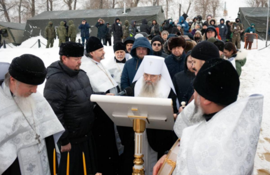
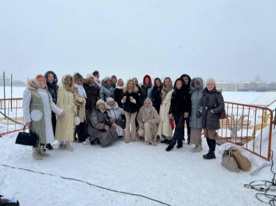

РЕГИОНАЛЬНАЯ САНКТ-ПЕТЕРБУРГСКАЯ ОБЩЕСТВЕННАЯ ОРГАНИЗАЦИЯ «ЛИГА СМЕШАННЫХ ЕДИНОБОРСТВ «ЛЕГИОН»
Организация общегородского праздничного мероприятия на территории Петропавловской крепости, приуроченного к 19 января (празднование Крещения) с проведением спортивной программы, культурной программы и массовых купаний в крещенской проруби. Мероприятие реализуется ежегодно с 2013 года, что стало возобновлением традиции, прекращенной в 1917 году. Мероприятие посещают многие тысячи молодежи не только из Петербурга, но и гостей города из других регионов и стран. Праздничное мероприятие 19 января у Петропавловской крепости стало одним из главных городских событий в этот день и визитной карточкой Санкт-Петербурга.
Отличительная особенность реализации проекта - объединение в организационно-административной группе представителей спортивных, волонтерских, студенческих и православных объединений; широкое привлечение партнерской сети с участием коммерческих организаций, бюджетных организаций и исполнительных органов государственной власти.
Событие широко освещается всеми городскими СМИ, праздник регулярно посещают первые лица города и почетные гости, большое число молодежи.
По завершению мероприятия в торжественной обстановке командой проводится церемония награждения волонтеров, партнеров и активных участников проекта с вручением благодарностей и сувениров.
Количество благополучателей: 3000 человек.
Количество волонтеров: 40 человек.